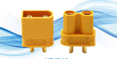

电池形状


穿越机使用的锂电池按外观可分为软包电池和圆柱电池两种。 软包电池一般侧重于高倍率放电，可提供更强的动力。
圆柱电池常用的又分为18650和21700两种，它们以电池尺寸命名（直径18mm长度65mm和直径21mm长度70mm），一般侧重于大容量以增加续航时间。
电池类型
穿越机主要使用的是三元锂电池，它能量密度高，即同样重量时能够储存更多电能。一般标称3.7V，满电4.2V，也有少量的满电4.3V或更高的高压锂电池在使用。电池组装方式
组装连接方式有串联和并联两种基本方式。串联记作S，并联记作P。例如6S2P意思为串联数为6，并联数为2，共12节电池（6x2）
电池插头


常用的穿越机电池插头为xt30和xt60。xt30额定电流15A，短时间电流30A。xt60额定电流30A，短时间电流60A。电池使用母头，飞机使用公头。
电池组的电压电流
电池组的电压电流与单节电池以及组装方式有直接关系。串联时增加电压，mAh数不变。例如6S电池组的标称电压为22.2V（3.7x6），满电电压25.2V（4.2x6）。
并联时电压不变，增加mAh数。例如两节4000mAh电池组成2P电池组，其参数为额定3.7V，容量8000mAh（4000x2）。
电池组的终止电压
- 软包电池 航模软包电池放电至单S电压至3.7V（总电压为3.7乘电池串数）时应该立即降落，即使降落后电压回升，也不应该再使用。
- 圆柱电池 航模软包电池放电至单S电压至3.0V（总电压为3.7乘电池串数）时应该立即降落，即使降落后电压回升，也不应该再使用。
电池组充电注意事项
- 电池温度过低或过高时充电，会增加电池的损耗。
- 刚从飞机上取下的电池不应该立刻充电，最好等待冷却后充电。
- 电池充电应控制倍率（C数），充电一般不超过1C。例如2000mAh的电池充电电流不应该超过2000mA。
- 必须使用航模充电器（平衡充）进行充电且必须连接平衡头。否则会导致电池爆炸。
- 充电器选择的电压必须和实际电池参数匹配。否则会导致电池爆炸。